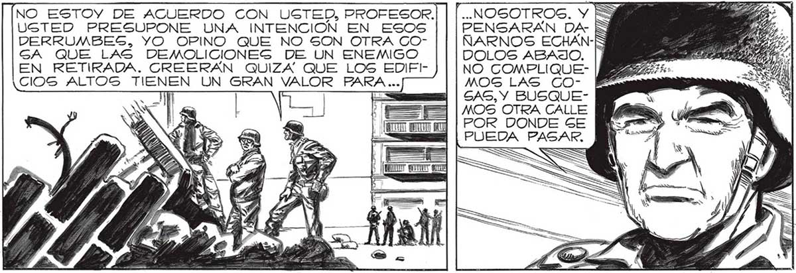
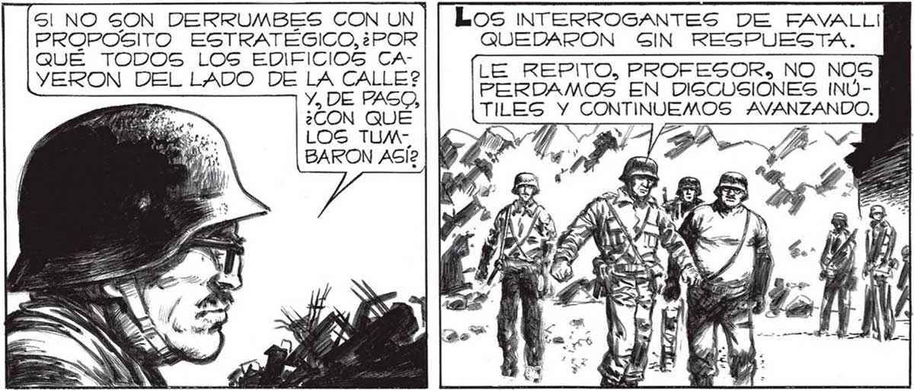

..NOGOTROG. Y S PENSARAN DA- S NARNOS ECHAÁN-K DOLOS ABAJO. NO GOMPLIQUEMOS LAS GOGAS, Y BUSQUEMOS OTRA CALLE POR DONDE GE PUEDA PASAR. = ..PESCARNOSGS PRACTICAMENTE INMOVILIZADOS ENTRE _ LOS ESCOMBROS. PUEDE SER TAMBIÉN, QUE CERRARON LA AVENIDA PARA HACERNOS IR POR OTRO LADO... [a NO ESTOY DE ACUERDO CON UCTED, PROFESOR, USTED PRESUPONE UNA INTENCION EN ESOS DERRUMBES, YO OPINO QUE NO SON OTRA COGA QUE LAS DEMOLICIONEGS DE UN ENEMIGO EN RETIRADA. CREERAÁN QUIZA QUE LOS EDIFICIOS ALTOG TIENEN UN GRAN VALOR PARA ... Los NTERROGANTES DE FAVALLI QUEDARON SIN RESPUESTA. LE REPITO, PROFESOR» NO NOG PERDAMOS EN DISCUSIONES INUTILESGS Y CONTINUEMOS AVANZANDO. S| NO SON DERRUMBES CON UN PROPOSITO ESTRATÉGICO, ¿POR QUÉ TODOS LOS EDIFICIOS CAVERON DEL LADO DE LA CALLE? Y, DE PASO, ¿CON QUÉ LOS TUMBARON ASÍ? SIGA CON 6U VANGUARDIA, TENIENTE SALVO, POR LA CALLE PAMPA: DOBLE A LA IZQUIERDA EN LA PRIMERA CALLE QUE ENCUENTRE LIBRE DE OBS — TACULOG. REANODAMOS LA MARCHA, POR LA PENDIENTE DE LA CALLE PAMPA. EL SUELO NO TEMBLABA, PERO TENÍAMOS LA CERTEZA DE UN PRONTO GRAN PELIGRO. lr ¡Y Gl... QUISIERA COMPARTIR EL OPTIMIGMO DEL MAYOR, PERO NO PUEDO... ESOS EDIFICIOS ABATIDOS COMO DE UN MANOTAZO PONEN FRIO EN LOS HUESOS... Corrimos JUNTO A FRANCO¿QUE NUEVO HA-, LLAZGO HABÍA HECHO? MIENTRAS CORRIAMOS, RECUER: DO QUE DE NUEVO EMPEZO A TEMBLAR EL SUELO... y] Mi! 1) y == 0 N av | ES Py SA a YA Ñ SN SS Ñ OS Ñ Med > 3 A Mo araratl AS =Í Se NV Ñ

